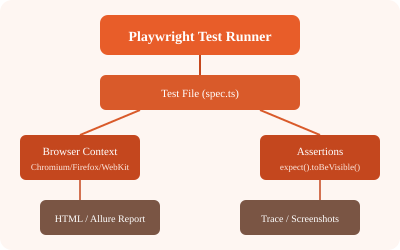

Interactive debugging tool that steps through your test:
# Run test in debug mode
npx playwright test --debug
# Or set PWDEBUG=1
$env:PWDEBUG=1
npx playwright testThe Inspector pauses at each action and shows the DOM state, locator suggestions, and actions you can perform.
Record interactions and generate Playwright code automatically:
npx playwright codegen https://example.com
# Preset to generate JavaScript
npx playwright codegen --target javascript https://example.com
# Preset to generate TypeScript
npx playwright codegen --target typescript https://example.comView a full trace of your test with DOM snapshots, network logs, and timing:
// In config: trace: 'on-first-retry' or 'on'
// View trace
npx playwright show-trace trace.zipnpx playwright show-report
// Reports are generated in playwright-report/ by default